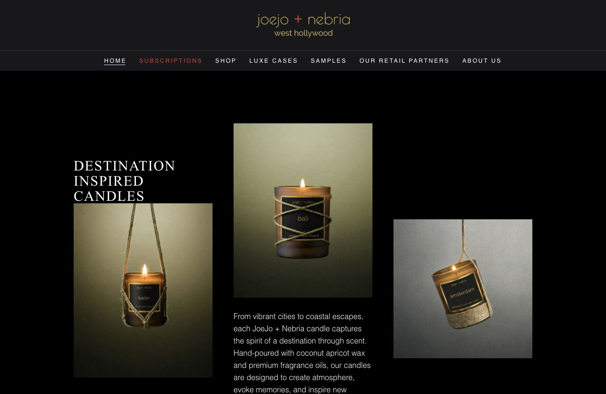

The current site · A closer look
Joejo + Nebria
Visual improvements, marked on the pages as they look today.

Screenshot couldn’t load. Refresh the page or open the original below.
Actual site · November 13, 2026.
Select a note to find its place in the screenshot.
What’s included in the original quote
The free Askka check covers license access and feasibility. These visual recommendations help decide what to tackle next; any implementation will have a fixed quote agreed before work starts.